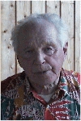

n'Erling Erik Konrad Erling Lundström
Bonde i Arnberg, Norsjö sn. Blev 100 år.
| Född: | 1916-04-03 Tvärliden, Norsjö sn. [1] |
|---|
| Änkling: | 1981-10-02 Arnberget 1, 5024, Norsjö, Norsjö fs, Norsjö kn. [2] |
|---|
| Levde: | 1991 Norsjö 3:20, Arnberg 30, Norsjö, Norsjö fs, Norsjö kn. [3] |
|---|
| Levde: | 2012 Skolgatan 42 B, Norsjö, Norsjö fs, Norsjö kn. [4] |
|---|
| Levde: | 2013 Skolgatan 42 B, Norsjö, Norsjö fs, Norsjö kn. [4] |
|---|
| Död: | 2016-06-11 Klockarbo, Norsjö, Norsjö fs, Norsjö sn. [5] |
|---|
| Vigsel: | 1947-07-05 Arnberget, Norsjö, Norsjö fs, Norsjö sn. | |
|---|
| Levde: | 1947-07-06 Arnberget, Norsjö sn. [6] | NþErling. |
|---|
| Levde: | 1971 Arnberget, Norsjö, Norsjö fs, Norsjö kn. [1] | |
|---|
| Levde: | 1981 Norsjö 3:20, Arnberget 1, 5024, Norsjö, Norsjö fs, Norsjö kn. [7] | |
|---|
Noteringar
Erling Lundström föddes i april 1916 i Tvärliden, Norsjö, som det tolfte av 15 barn till Konrad och Kristina Lundström, och fick klar i knoppen, uppleva sin 100:e födelsedag innan han stilla somnade in i sin lägenhet på Klockarbo, Norsjö, den 11 juni efter en kort tids sjukdom.
Den som i dag kommer till Tvärliden har svårt förstå hur det var att växa upp i en timrad stuga utan isolering. Vatten- och slaskhinkarna frös för natten och värmen höll man genom att ligga två-tre barn skavföttes i samma säng. Till skolan i Risliden gick barnen de tre kilometrarna i ur och skur med hunden Musti i spetsen. Det gav en närhet mellan syskonen som följde med livet ut.
Erling och hans två bröder, Martin och Henrik, kunde under 1930-talet utveckla Tvärliden med väg till Risliden, brunn på gården, el, samt ny stuga under 1940-talet. 1936 var det dags för rekryten på A8 i Boden och Erling kom i samband med mobiliseringen att tillbringa 900 dagar i det militära.
År 1947 gifte sig Erling med Mary Nyström från Arnberg och de kom att bosätta sig på Marys hemställe. 1950-talet innebar en stor omställning då det småskaliga jordbruket inte längre gav försörjning. Erling kom då att arbeta på kraftverksbyggen längs Skellefteälven och som allsidig byggnadsarbetare fram till sin pensionering 1981. Samma år dog Mary. Som pensionär fortsatte Erling att arbeta långt upp i åren. Han ägnade mycket tid till den egna skogen och skötte med varm hand om de egna fåren som han avvecklade 1993.
Som pensionär visade Erling många sociala talanger. Han odlade en stor bekantskapskrets som gick långt utanför dragspelsklubben och älgjaktslaget. De sista tio åren tillbringade han på äldreboendet Klockarbo där han mycket väl omhändertagen var en stor glädjespridare för personal och grannar med sitt goda humör och sin träffsäkra humor.
Sonen Stellan Lundström, barnbarnen Patrik och Linda
norran.se/familj/dodsfall/erling-lundstrom-2-610276
Personhistoria
| Årtal | Ålder | Händelse |
|---|
| 1916 |
|
Födelse 1916-04-03 Tvärliden, Norsjö sn [1] |
| 1918 |
2 år |
Brodern "Guld Martin" Bo Hilding Martin Lundström föds 1918-05-30 Tvärliden, Norsjö sn |
| 1920 |
4 år |
Brodern Karl Henrik Ansgar Lundström föds 1920-04-22 Tvärliden, Norsjö sn |
| 1921 |
5 år |
Makan Mary Lilian Ingegärd Nyström föds 1921-05-18 Arnberget, Norsjö sn [8] |
| 1923 |
7 år |
Systern Karin Birgitta Lundström föds 1923-05-11 Tvärliden, Norsjö sn |
| 1947 |
31 år |
Vigsel Mary Lilian Ingegärd Nyström 1947-07-05 Arnberget, Norsjö, Norsjö fs, Norsjö sn |
| 1947 |
31 år |
Levde Mary Lilian Ingegärd Nyström 1947-07-06 Arnberget, Norsjö sn [6] |
| 1950 |
34 år |
Sonen Bo Erling Stellan Lundström föds 1950-10-05 Norsjö 3:20, Arnberg 30, Norsjö, Norsjö fs, Norsjö sn [1] |
| 1959 |
42 år |
Fadern n'TvärliKonrad Konrad Lundström dör 1959-02-11 Tvärliden 1:5, Norsjö fs, Norsjö kn [9] |
| 1971 |
|
Levde Mary Lilian Ingegärd Nyström 1971 Arnberget, Norsjö, Norsjö fs, Norsjö kn [1] |
| 1976 |
59 år |
Modern Kristina (Stina) Josefina Lyxell dör 1976-02-15 Tvärliden 1:5, Norsjö fs, Norsjö kn [10] |
| 1981 |
|
Levde Mary Lilian Ingegärd Nyström 1981 Norsjö 3:20, Arnberget 1, 5024, Norsjö, Norsjö fs, Norsjö kn [7] |
| 1981 |
65 år |
Änkling 1981-10-02 Arnberget 1, 5024, Norsjö, Norsjö fs, Norsjö kn [2] |
| 1981 |
65 år |
Makan Mary Lilian Ingegärd Nyström dör 1981-10-02 Arnberget 1, 5024, Norsjö, Norsjö fs, Norsjö kn [11] |
| 1982 |
66 år |
Systern Anna Gunhild Lundström dör 1982-08-20 Tjärnberg, Norsjö sn |
| 1984 |
68 år |
Systern Kristina Konkordia Lundström dör 1984-11-24 Stensborg 1:2, Norsjö fs, Norsjö kn [12] |
| 1991 |
|
Levde 1991 Norsjö 3:20, Arnberg 30, Norsjö, Norsjö fs, Norsjö kn [3] |
| 1996 |
80 år |
Systern Jenny Adelia (Adele) Karolina Lundström Nilsson dör 1996-09-23 Skolg 42 A, Norsjö, Norsjö fs, Norsjö kn [13] |
| 1998 |
82 år |
Systern Julia Vilhelmina Lundström dör 1998-12-29 S:t Olov fs, Skellefteå stad |
| 1999 |
83 år |
Systern Edla Linnea Lundström dör 1999-09-14 Muskegon, Michigan (USA) |
| 2008 |
92 år |
Systern Rut Ingeborg Lundström dör 2008-09-06 Skolgatan 43, Norsjö, Norsjö fs, Norsjö kn [14] |
| 2012 |
|
Levde 2012 Skolgatan 42 B, Norsjö, Norsjö fs, Norsjö kn [4] |
| 2013 |
|
Levde 2013 Skolgatan 42 B, Norsjö, Norsjö fs, Norsjö kn [4] |
| 2016 |
100 år |
Död 2016-06-11 Klockarbo, Norsjö, Norsjö fs, Norsjö sn [5] |
Källor
| [1] | Mtl Västerbottens län 1971 |
| |
| | |
| [2] | RTB 81 / SPAR 90, Mantalslängd 1991, Västerbottens län |
| |
| | |
| [3] | Mantalslängd 1991, Västerbottens län |
| |
| | |
| [4] | https://www.ratsit.se/sok/avancerat/person |
| |
| | |
| [5] | http://norran.se/familj/dodsfall/erling-lundstrom-2-610276 |
| |
| | |
| [6] | Patrik Lundström= hem.passagen.se/patlun/ |
| |
| | |
| [7] | Mtl Västerbottens län 1981 |
| |
| | |
| [8] | Norsjö AIIA:5 (1912-1928) fol. 29 |
| |
| | |
| [9] | DB, FS / DOR 52-60 |
| |
| | |
| [10] | Mtl 71 / RTB 76 |
| |
| | |
| [11] | RTB 81 / SPAR 90 |
| |
| | |
| [12] | SPAR 90, RTB 84 |
| |
| | |
| [13] | RTB 96 / SPAR 92f / SPAR 97 |
| |
| | |
| [14] | FK 09 / man91, http://norran.se/2008/09/arkivet/rutnystrom/ |
| |
|
|  |
| 2002-07-06. Erling Lundström. Foto: Christer Westman. |
|
{kind=link}